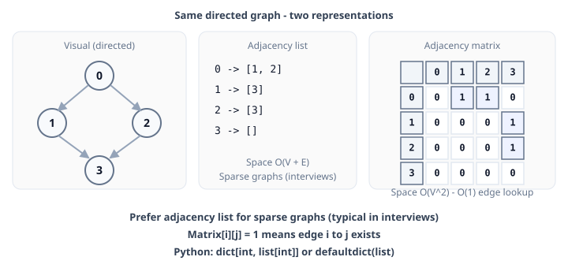
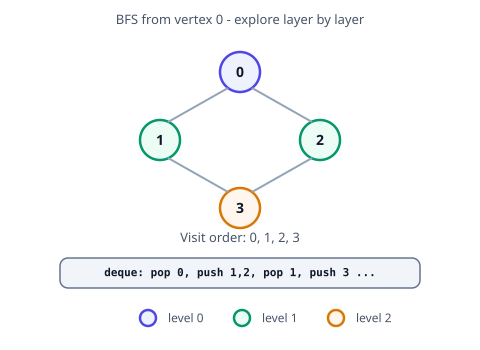

Graph
A graph G = (V, E) consists of vertices V and edges E connecting them. Graphs model networks, dependencies, grids (as implicit graphs), and state machines.
When to use graph algorithms
| Problem signal |
Algorithm family |
| Shortest path (unweighted) |
BFS |
| Shortest path (non-negative weights) |
Dijkstra |
| Negative edges |
Bellman-Ford |
| All-pairs shortest paths |
Floyd-Warshall |
| Connectivity / cycles |
DFS, Union-Find |
| Topological order |
Kahn's BFS or DFS |
| Minimum spanning tree |
Kruskal, Prim |
Grids are graphs: each cell is a vertex; edges connect adjacent cells (4- or 8-direction). Use for dr, dc in ((0,1),(1,0),(0,-1),(-1,0)): and mark visited in-place or with a set. Multi-source BFS: enqueue all sources at once (rotting oranges, walls and gates).
Union-Find (Disjoint Set): When the problem asks about dynamic connectivity, counting components, detecting a cycle in an undirected graph, or merging groups — use Union-Find with path compression and union by rank. Amortized α(n) per operation. Examples: LC 684, 547, 721.
Terminology
| Term |
Meaning |
| Directed / undirected |
Edges have direction or not |
| Weighted |
Edge has cost / distance |
| Degree |
Number of edges incident to a vertex |
| Path |
Sequence of vertices connected by edges |
| Cycle |
Path that starts and ends at same vertex |
| Connected component |
Maximal set of mutually reachable vertices |
| DAG |
Directed acyclic graph — no directed cycles |
| SCC |
Strongly connected component (directed) |
Representation complexity
| Representation |
Space |
Add edge |
Check edge (u,v) |
Iterate neighbors of u |
| Adjacency matrix |
O(V²) |
O(1) |
O(1) |
O(V) |
| Adjacency list |
O(V + E) |
O(1) |
O(degree) |
O(degree) |
Use adjacency list for sparse graphs (typical in interviews). Prefer dict[int, list[int]] or defaultdict(list) in Python when vertices are not 0..n-1.

Graph Representation
Adjacency Matrix
| class GraphAdjMatrix:
def __init__(self, num_vertices, graph_type='directed'):
self.num_vertices = num_vertices
self.graph_type = graph_type.lower()
self.matrix = [[0] * num_vertices for _ in range(num_vertices)]
def add_edge(self, u, v):
if u < 0 or v < 0 or u >= self.num_vertices or v >= self.num_vertices:
print(f"Invalid vertices: {u}, {v}")
return
self.matrix[u][v] = 1
if self.graph_type == 'undirected':
self.matrix[v][u] = 1
def print_graph(self):
print(f"Adjacency Matrix ({self.graph_type.capitalize()} Graph):")
for row in self.matrix:
print(row)
directed_graph = GraphAdjMatrix(4, 'directed')
directed_graph.add_edge(0, 1)
directed_graph.add_edge(0, 2)
directed_graph.add_edge(1, 3)
directed_graph.add_edge(2, 3)
print("Directed Graph:")
directed_graph.print_graph()
print("\n")
undirected_graph = GraphAdjMatrix(4, 'undirected')
undirected_graph.add_edge(0, 1)
undirected_graph.add_edge(0, 2)
undirected_graph.add_edge(1, 3)
undirected_graph.add_edge(2, 3)
print("Undirected Graph:")
undirected_graph.print_graph()
|
Adjacency List
| class GraphAdjList:
def __init__(self, num_vertices, graph_type='directed'):
self.num_vertices = num_vertices
self.graph_type = graph_type.lower()
self.adj_list = {i: [] for i in range(num_vertices)}
def add_edge(self, u, v):
if u < 0 or v < 0 or u >= self.num_vertices or v >= self.num_vertices:
print(f"Invalid vertices: {u}, {v}")
return
self.adj_list[u].append(v)
if self.graph_type == 'undirected':
self.adj_list[v].append(u)
def print_graph(self):
print(f"Adjacency List ({self.graph_type.capitalize()} Graph):")
for node in self.adj_list:
print(f"{node}: {self.adj_list[node]}")
directed_graph = GraphAdjList(4, 'directed')
directed_graph.add_edge(0, 1)
directed_graph.add_edge(0, 2)
directed_graph.add_edge(1, 3)
directed_graph.add_edge(2, 3)
print("Directed Graph:")
directed_graph.print_graph()
print("\n")
undirected_graph = GraphAdjList(4, 'undirected')
undirected_graph.add_edge(0, 1)
undirected_graph.add_edge(0, 2)
undirected_graph.add_edge(1, 3)
undirected_graph.add_edge(2, 3)
print("Undirected Graph:")
undirected_graph.print_graph()
|
BFS
Breadth-first search explores the graph level by level from a source vertex. Use a deque queue; unweighted shortest paths follow the first time each node is visited.

BFS for Undirected graph with source
| from collections import deque
def bfs(graph, source):
visited = set()
queue = deque([source])
visited.add(source)
bfs_result = []
while queue:
current = queue.popleft()
bfs_result.append(current)
for neighbor in graph[current]:
if neighbor not in visited:
visited.add(neighbor)
queue.append(neighbor)
return bfs_result
if __name__ == "__main__":
graph = {
0: [1, 2],
1: [0, 3, 4],
2: [0],
3: [1],
4: [1]
}
source_vertex = 0
result = bfs(graph, source_vertex)
print("BFS Traversal:", result)
|
BFS for Disconnected Graph
| from collections import deque
def bfs(graph, source, visited):
# Initialize the queue for BFS
queue = deque([source])
# Mark the source vertex as visited
visited.add(source)
# Result list to store the BFS traversal
bfs_result = []
# Perform BFS
while queue:
# Dequeue a vertex from the queue
current = queue.popleft()
# Add the current vertex to the result
bfs_result.append(current)
# Visit all the neighbors of the current vertex
for neighbor in graph[current]:
if neighbor not in visited:
# Mark as visited and enqueue the neighbor
visited.add(neighbor)
queue.append(neighbor)
return bfs_result
def bfs_disconnected(graph):
# Create a visited set to track visited vertices
visited = set()
result = []
# Traverse through all vertices in the graph
for vertex in graph:
if vertex not in visited:
# Perform BFS from each unvisited vertex (handles disconnected components)
component_bfs = bfs(graph, vertex, visited)
result.append(component_bfs)
return result
# Example usage
if __name__ == "__main__":
# Example of a disconnected graph
graph = {
0: [1, 2],
1: [0, 3],
2: [0],
3: [1],
4: [5],
5: [4]
}
# Perform BFS for the entire graph
result = bfs_disconnected(graph)
print("BFS Traversal of each component:", result)
|
count connected components with BFS
| from collections import deque
def bfs(graph, source, visited):
# Initialize the queue for BFS
queue = deque([source])
# Mark the source vertex as visited
visited.add(source)
# Perform BFS
while queue:
# Dequeue a vertex from the queue
current = queue.popleft()
# Visit all the neighbors of the current vertex
for neighbor in graph[current]:
if neighbor not in visited:
# Mark as visited and enqueue the neighbor
visited.add(neighbor)
queue.append(neighbor)
def count_connected_components(graph):
# Create a visited set to track visited vertices
visited = set()
# Variable to store the count of connected components
component_count = 0
# Traverse through all vertices in the graph
for vertex in graph:
if vertex not in visited:
# Perform BFS to find the connected component for each unvisited vertex
bfs(graph, vertex, visited)
# After finishing BFS for a component, increment the component count
component_count += 1
return component_count
# Example usage
if __name__ == "__main__":
# Example of a disconnected graph
graph = {
0: [1, 2],
1: [0, 3],
2: [0],
3: [1],
4: [5],
5: [4]
}
# Find and print the count of connected components
result = count_connected_components(graph)
print("Number of connected components:", result)
|
DFS
DFS for Undirected Graph with Source
| # DFS for Undirected Graph with Source
from collections import defaultdict
def dfs(graph, source, visited, dfs_result):
# Mark the source vertex as visited
visited.add(source)
# Add the source vertex to the result
dfs_result.append(source)
# Visit all the neighbors of the current vertex
for neighbor in graph[source]:
if neighbor not in visited:
dfs(graph, neighbor, visited, dfs_result)
if __name__ == "__main__":
graph = {
0: [1, 2],
1: [0, 3, 4],
2: [0],
3: [1],
4: [1]
}
source_vertex = 0
visited = set()
dfs_result = []
# Perform DFS starting from the source vertex
dfs(graph, source_vertex, visited, dfs_result)
print("DFS Traversal:", dfs_result)
|
DFS for Disconnected Graph
| # DFS for Disconnected Graph
from collections import defaultdict
def dfs(graph, source, visited, dfs_result):
# Mark the source vertex as visited
visited.add(source)
# Add the source vertex to the result
dfs_result.append(source)
# Visit all the neighbors of the current vertex
for neighbor in graph[source]:
if neighbor not in visited:
dfs(graph, neighbor, visited, dfs_result)
def dfs_disconnected(graph):
visited = set()
result = []
# Traverse through all vertices in the graph
for vertex in graph:
if vertex not in visited:
# Perform DFS from each unvisited vertex (handles disconnected components)
component_dfs = []
dfs(graph, vertex, visited, component_dfs)
result.append(component_dfs)
return result
# Example usage
if __name__ == "__main__":
# Example of a disconnected graph
graph = {
0: [1, 2],
1: [0, 3],
2: [0],
3: [1],
4: [5],
5: [4]
}
# Perform DFS for the entire graph
result = dfs_disconnected(graph)
print("DFS Traversal of each component:", result)
|
Count Connected Components with DFS
| # Count Connected Components with DFS
from collections import defaultdict
def dfs(graph, source, visited):
# Mark the source vertex as visited
visited.add(source)
# Visit all the neighbors of the current vertex
for neighbor in graph[source]:
if neighbor not in visited:
dfs(graph, neighbor, visited)
def count_connected_components(graph):
visited = set()
component_count = 0
# Traverse through all vertices in the graph
for vertex in graph:
if vertex not in visited:
# Perform DFS to find the connected component for each unvisited vertex
dfs(graph, vertex, visited)
# After finishing DFS for a component, increment the component count
component_count += 1
return component_count
# Example usage
if __name__ == "__main__":
# Example of a disconnected graph
graph = {
0: [1, 2],
1: [0, 3],
2: [0],
3: [1],
4: [5],
5: [4]
}
# Find and print the count of connected components
result = count_connected_components(graph)
print("Number of connected components:", result)
|
Cycle Detection
DFS Based Cycle Detection
| def has_cycle(graph, vertex, visited, parent):
visited.add(vertex)
for neighbor in graph[vertex]:
if neighbor not in visited:
if has_cycle(graph, neighbor, visited, vertex):
return True
elif neighbor != parent:
return True
return False
def cycle_detection(graph):
visited = set()
for vertex in graph:
if vertex not in visited:
if has_cycle(graph, vertex, visited, None):
return True
return False
|
Union Based Cycle Detection (Undirected graph)
| class UnionFind:
def __init__(self, size):
self.parent = list(range(size))
self.rank = [1] * size
def find(self, x):
if self.parent[x] != x:
self.parent[x] = self.find(self.parent[x]) # Path compression
return self.parent[x]
def union(self, x, y):
rootX = self.find(x)
rootY = self.find(y)
if rootX != rootY:
if self.rank[rootX] > self.rank[rootY]:
self.parent[rootY] = rootX
elif self.rank[rootX] < self.rank[rootY]:
self.parent[rootX] = rootY
else:
self.parent[rootY] = rootX
self.rank[rootX] += 1
else:
return True # Cycle detected
return False
def cycle_detection(graph, num_vertices):
uf = UnionFind(num_vertices)
for u in graph:
for v in graph[u]:
if uf.union(u, v): # If union returns True, a cycle exists
return True
return False
|
Topological Sort based cycle detection (Directed Graph)
| from collections import deque
def topological_sort(graph, num_vertices):
in_degree = [0] * num_vertices
for u in graph:
for v in graph[u]:
in_degree[v] += 1
queue = deque([i for i in range(num_vertices) if in_degree[i] == 0])
sorted_list = []
while queue:
node = queue.popleft()
sorted_list.append(node)
for neighbor in graph[node]:
in_degree[neighbor] -= 1
if in_degree[neighbor] == 0:
queue.append(neighbor)
return sorted_list if len(sorted_list) == num_vertices else None # None if cycle is detected
# Example usage for cycle detection:
graph = {0: [1], 1: [2], 2: [0]} # A graph with a cycle
print("Cycle detected:", topological_sort(graph, 3) is None)
|
Topological Sort
Kahn's Algorithm (BFS-Based)
| from collections import deque, defaultdict
def topological_sort(graph, num_vertices):
in_degree = [0] * num_vertices
for u in graph:
for v in graph[u]:
in_degree[v] += 1
queue = deque([i for i in range(num_vertices) if in_degree[i] == 0])
sorted_list = []
while queue:
node = queue.popleft()
sorted_list.append(node)
for neighbor in graph[node]:
in_degree[neighbor] -= 1
if in_degree[neighbor] == 0:
queue.append(neighbor)
return sorted_list if len(sorted_list) == num_vertices else None # None if cycle detected
|
DFS based Topological Sort
| def dfs(graph, vertex, visited, stack):
visited.add(vertex)
for neighbor in graph[vertex]:
if neighbor not in visited:
dfs(graph, neighbor, visited, stack)
stack.append(vertex)
def topological_sort(graph, num_vertices):
visited = set()
stack = []
for vertex in range(num_vertices):
if vertex not in visited:
dfs(graph, vertex, visited, stack)
return stack[::-1] # Reverse the stack for correct topological order
|
DFS based with Cycle Detection
| def dfs(graph, vertex, visited, stack, temp_stack):
visited.add(vertex)
temp_stack.add(vertex)
for neighbor in graph[vertex]:
if neighbor in temp_stack:
return False # Cycle detected
if neighbor not in visited:
if not dfs(graph, neighbor, visited, stack, temp_stack):
return False
stack.append(vertex)
temp_stack.remove(vertex)
return True
def topological_sort(graph, num_vertices):
visited = set()
stack = []
for vertex in range(num_vertices):
if vertex not in visited:
temp_stack = set()
if not dfs(graph, vertex, visited, stack, temp_stack):
return None # Cycle detected
return stack[::-1]
|
Flood Fill
DFS based flood fill
| def flood_fill(grid, x, y, new_color, original_color):
if x < 0 or x >= len(grid) or y < 0 or y >= len(grid[0]):
return
if grid[x][y] != original_color:
return
grid[x][y] = new_color
flood_fill(grid, x+1, y, new_color, original_color)
flood_fill(grid, x-1, y, new_color, original_color)
flood_fill(grid, x, y+1, new_color, original_color)
flood_fill(grid, x, y-1, new_color, original_color)
|
BFS Based Flood Fill
| from collections import deque
def flood_fill(grid, x, y, new_color, original_color):
if x < 0 or x >= len(grid) or y < 0 or y >= len(grid[0]):
return
if grid[x][y] != original_color:
return
queue = deque([(x, y)])
grid[x][y] = new_color
while queue:
cx, cy = queue.popleft()
for dx, dy in [(-1, 0), (1, 0), (0, -1), (0, 1)]:
nx, ny = cx + dx, cy + dy
if 0 <= nx < len(grid) and 0 <= ny < len(grid[0]) and grid[nx][ny] == original_color:
grid[nx][ny] = new_color
queue.append((nx, ny))
|
Dijkstra Algorithm
MinHeap Based
| import heapq
def dijkstra(graph, start):
pq = [(0, start)]
distances = {vertex: float('inf') for vertex in graph}
distances[start] = 0
while pq:
current_dist, current_vertex = heapq.heappop(pq)
if current_dist > distances[current_vertex]:
continue
for neighbor, weight in graph[current_vertex]:
distance = current_dist + weight
if distance < distances[neighbor]:
distances[neighbor] = distance
heapq.heappush(pq, (distance, neighbor))
return distances
|
using simple array
| def dijkstra(graph, start):
distances = {vertex: float('inf') for vertex in graph}
distances[start] = 0
visited = set()
while len(visited) < len(graph):
min_distance = float('inf')
min_vertex = None
for vertex in graph:
if vertex not in visited and distances[vertex] < min_distance:
min_distance = distances[vertex]
min_vertex = vertex
visited.add(min_vertex)
for neighbor, weight in graph[min_vertex]:
if neighbor not in visited:
new_distance = distances[min_vertex] + weight
if new_distance < distances[neighbor]:
distances[neighbor] = new_distance
return distances
|
Bellman Ford
Basic with iterative cycle
| def bellman_ford(graph, vertices, start):
distances = {v: float('inf') for v in vertices}
distances[start] = 0
for _ in range(len(vertices) - 1):
for u in graph:
for v, weight in graph[u]:
if distances[u] + weight < distances[v]:
distances[v] = distances[u] + weight
# Check for negative weight cycles
for u in graph:
for v, weight in graph[u]:
if distances[u] + weight < distances[v]:
raise ValueError("Graph contains a negative weight cycle")
return distances
|
Bellman ford with early stopping
| def bellman_ford(graph, vertices, start):
distances = {v: float('inf') for v in vertices}
distances[start] = 0
for _ in range(len(vertices) - 1):
updated = False
for u in graph:
for v, weight in graph[u]:
if distances[u] + weight < distances[v]:
distances[v] = distances[u] + weight
updated = True
if not updated:
break
# Check for negative weight cycles
for u in graph:
for v, weight in graph[u]:
if distances[u] + weight < distances[v]:
raise ValueError("Graph contains a negative weight cycle")
return distances
|
Floyd Warshall
Basic Floyd Warshall algorithm
| def floyd_warshall(graph, num_vertices):
dist = [[float('inf')] * num_vertices for _ in range(num_vertices)]
for u in range(num_vertices):
dist[u][u] = 0
for u in graph:
for v, weight in graph[u]:
dist[u][v] = weight
for k in range(num_vertices):
for i in range(num_vertices):
for j in range(num_vertices):
dist[i][j] = min(dist[i][j], dist[i][k] + dist[k][j])
return dist
|
Floyd Warshall with path tracking
| def floyd_warshall(graph, num_vertices):
dist = [[float('inf')] * num_vertices for _ in range(num_vertices)]
next_node = [[-1] * num_vertices for _ in range(num_vertices)]
for u in range(num_vertices):
dist[u][u] = 0
next_node[u][u] = u
for u in graph:
for v, weight in graph[u]:
dist[u][v] = weight
next_node[u][v] = v
for k in range(num_vertices):
for i in range(num_vertices):
for j in range(num_vertices):
if dist[i][j] > dist[i][k] + dist[k][j]:
dist[i][j] = dist[i][k] + dist[k][j]
next_node[i][j] = next_node[i][k]
return dist, next_node
|
Travelling Salesman Problem
Dynamic programming (Held-Karp)
| import itertools
def tsp(graph, num_vertices):
# dp[mask][i] represents the minimum cost to visit all nodes in mask and end at i
dp = [[float('inf')] * num_vertices for _ in range(1 << num_vertices)]
dp[1][0] = 0 # Starting point
for mask in range(1, 1 << num_vertices):
for u in range(num_vertices):
if (mask & (1 << u)) == 0:
continue
for v in range(num_vertices):
if (mask & (1 << v)) == 0:
dp[mask | (1 << v)][v] = min(dp[mask | (1 << v)][v], dp[mask][u] + graph[u][v])
return min(dp[(1 << num_vertices) - 1][i] for i in range(1, num_vertices))
|
Greedy Approach
| def tsp(graph, start=0):
visited = set([start])
total_cost = 0
current_vertex = start
while len(visited) < len(graph):
next_vertex = None
min_cost = float('inf')
for neighbor, weight in graph[current_vertex]:
if neighbor not in visited and weight < min_cost:
next_vertex = neighbor
min_cost = weight
visited.add(next_vertex)
total_cost += min_cost
current_vertex = next_vertex
return total_cost
|
Disjoint Set Union
Basic Union-Find
| class UnionFind:
def __init__(self, size):
self.parent = list(range(size))
def find(self, x):
if self.parent[x] != x:
self.parent[x] = self.find(self.parent[x])
return self.parent[x]
def union(self, x, y):
rootX = self.find(x)
rootY = self.find(y)
if rootX != rootY:
self.parent[rootY] = rootX
|
With Path compression and union by rank
| class UnionFind:
def __init__(self, size):
self.parent = list(range(size))
self.rank = [1] * size
def find(self, x):
if self.parent[x] != x:
self.parent[x] = self.find(self.parent[x])
return self.parent[x]
def union(self, x, y):
rootX = self.find(x)
rootY = self.find(y)
if rootX != rootY:
if self.rank[rootX] > self.rank[rootY]:
self.parent[rootY] = rootX
elif self.rank[rootX] < self.rank[rootY]:
self.parent[rootX] = rootY
else:
self.parent[rootY] = rootX
self.rank[rootX] += 1
|
Minimum Spanning Tree
Kruskal's Algorithm with Union-Find
| class Edge:
def __init__(self, u, v, weight):
self.u = u
self.v = v
self.weight = weight
def __lt__(self, other):
return self.weight < other.weight
def kruskal(graph, num_vertices):
edges = []
for u in graph:
for v, weight in graph[u]:
edges.append(Edge(u, v, weight))
edges.sort()
uf = UnionFind(num_vertices)
mst = []
mst_weight = 0
for edge in edges:
if uf.find(edge.u) != uf.find(edge.v):
uf.union(edge.u, edge.v)
mst.append((edge.u, edge.v, edge.weight))
mst_weight += edge.weight
return mst, mst_weight
|
Prims Algorithm (greedy)
| import heapq
def prim(graph, num_vertices):
min_heap = [(0, 0)] # Start with vertex 0, cost 0
mst = []
in_mst = [False] * num_vertices
total_weight = 0
while min_heap:
weight, u = heapq.heappop(min_heap)
if in_mst[u]:
continue
in_mst[u] = True
total_weight += weight
if weight > 0:
mst.append(u)
for v, w in graph[u]:
if not in_mst[v]:
heapq.heappush(min_heap, (w, v))
return mst, total_weight
|
Strongly Connected Components
In a directed graph, an SCC is a maximal set of vertices mutually reachable from each other. Kosaraju's algorithm: two DFS passes — forward on G, then forward on reversed finish-order.
Time: O(V + E). Space: O(V) for stacks and visited flags.
| def kosaraju(graph: dict[int, list[int]], n: int) -> list[list[int]]:
# graph: adjacency list, vertices 0..n-1
visited = set()
order: list[int] = []
def dfs1(v: int) -> None:
visited.add(v)
for nei in graph.get(v, []):
if nei not in visited:
dfs1(nei)
order.append(v)
for v in range(n):
if v not in visited:
dfs1(v)
reverse: dict[int, list[int]] = {i: [] for i in range(n)}
for u in graph:
for v in graph[u]:
reverse[v].append(u)
visited.clear()
components: list[list[int]] = []
def dfs2(v: int, comp: list[int]) -> None:
visited.add(v)
comp.append(v)
for nei in reverse.get(v, []):
if nei not in visited:
dfs2(nei, comp)
for v in reversed(order):
if v not in visited:
comp: list[int] = []
dfs2(v, comp)
components.append(comp)
return components
|
Bridges in Graph
A bridge is an edge whose removal increases the number of connected components (undirected graph). Found with DFS tracking discovery time and low-link value.
Time: O(V + E). Space: O(V).
| def find_bridges(adj: dict[int, list[int]], n: int) -> list[tuple[int, int]]:
timer = 0
disc = [-1] * n
low = [-1] * n
bridges: list[tuple[int, int]] = []
def dfs(u: int, parent: int) -> None:
nonlocal timer
disc[u] = low[u] = timer
timer += 1
for v in adj.get(u, []):
if disc[v] == -1:
dfs(v, u)
low[u] = min(low[u], low[v])
if low[v] > disc[u]:
bridges.append((u, v))
elif v != parent:
low[u] = min(low[u], disc[v])
for i in range(n):
if disc[i] == -1:
dfs(i, -1)
return bridges
|
Articulation Points
An articulation point (cut vertex) is a vertex whose removal disconnects the graph. Same DFS low/disc framework as bridges.
Time: O(V + E). Space: O(V).
| def articulation_points(adj: dict[int, list[int]], n: int) -> set[int]:
timer = 0
disc = [-1] * n
low = [-1] * n
ap: set[int] = set()
root_children = 0
def dfs(u: int, parent: int, is_root: bool) -> None:
nonlocal timer, root_children
disc[u] = low[u] = timer
timer += 1
children = 0
for v in adj.get(u, []):
if disc[v] == -1:
children += 1
dfs(v, u, False)
low[u] = min(low[u], low[v])
if parent != -1 and low[v] >= disc[u]:
ap.add(u)
elif v != parent:
low[u] = min(low[u], disc[v])
if is_root and children > 1:
ap.add(u)
for i in range(n):
if disc[i] == -1:
dfs(i, -1, True)
return ap
|